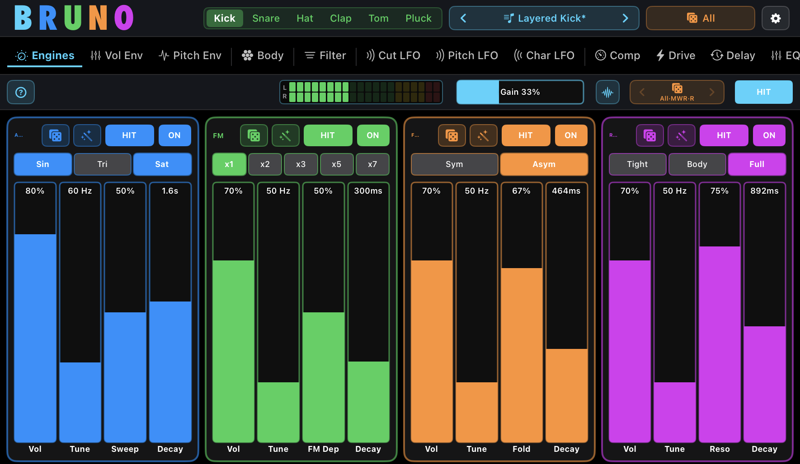
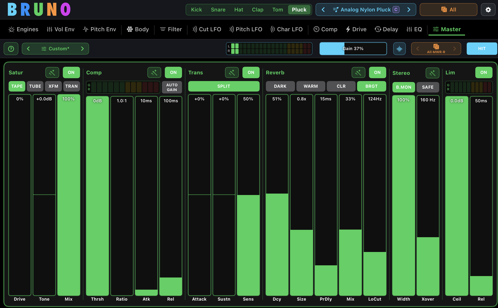
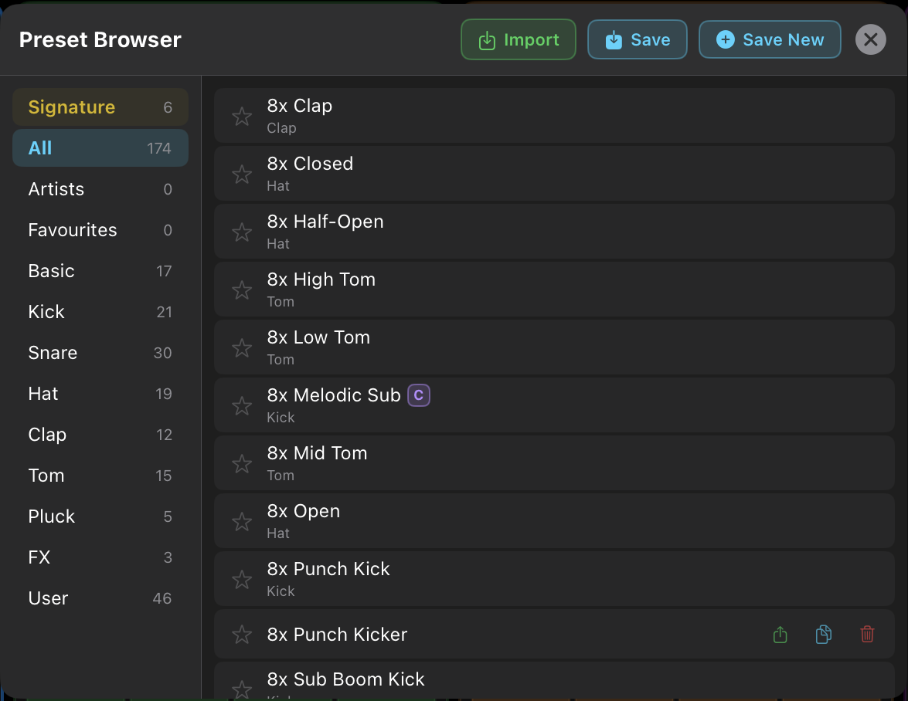
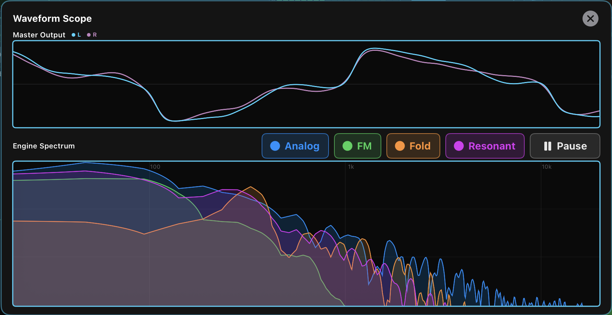

1Welcome to Bruno
Bruno is a layered drum synthesizer for iPad and iPhone (and any Apple Silicon Mac running iPad apps). Each instance produces one percussion sound by layering up to four independent synthesis engines.
You load one Bruno per drum track — a kick on one, a snare on another, a hat on a third. Inside each instance, four engines (Analog FM Fold Resonant) run in parallel and sum together, so a single drum can be as simple as one clean sine or as rich as four stacked layers.
You choose a voice type — Kick, Snare, Hat, Clap, Tom or Pluck — and that reconfigures all four engines for that drum's frequency range and character. From there, every engine has its own complete signal chain: tune, envelopes, filter, three LFOs, compressor, drive, delay and EQ.
This guide covers every panel and control. If you're new to drum synthesis, start at the top and read straight through. If you're after one specific feature, use the table of contents on the left.
Bruno is available two ways:
- Standalone app on iPad and iPhone — with MIDI input, plus a built-in keyboard on iPad.
- AUv3 plugin — drops into Logic Pro for iPad, GarageBand, AUM and other compatible AUv3 hosts, where you load one Bruno per drum track.
The same build also runs natively on Apple Silicon Macs (M1 and later) via the App Store. Most of this guide applies to both standalone and plugin; where things differ — the on-screen keyboard only exists in the iPad standalone — that's flagged in the section.
2System Requirements
- iPad running a current version of iPadOS.
- iPhone running a current version of iOS.
- Apple Silicon Mac (M1 or later) — the iPad app is available on the Mac App Store and runs natively in its own window.
- AUv3 host required when using Bruno as a plugin (e.g. Logic Pro for iPad, GarageBand, AUM and other compatible hosts).
3Getting Started
The fastest way to a great drum sound is to let Bruno make one for you.
- Open Bruno (standalone) or load it as an AUv3 plugin in your host.
- Pick a voice from the Voice Selector in the header (Kick, Snare, Hat, Clap, Tom or Pluck).
- Tap the dice button (🎲) in the Master Strip to roll a fresh random preset for that voice.
- Trigger the sound — tap a HIT button on any engine card, play the on-screen keyboard (standalone), or send a MIDI note from your controller / DAW.
- Like the direction but want a variation? Open the Random panel and tap Tweak to nudge the current sound instead of rolling a brand new one.
- Want to change just one layer? Tap the small dice on a single engine card to reroll only that engine.
When you find a sound you love, save it to your User library — see 18. Presets.
4Interface Tour
A quick walkthrough of where everything lives. Bruno organises all its controls into tabs, and every tab shows the same four engine cards side by side.

4.1 Header Bar
Across the top of the screen, from left to right:
- BRUNO logo — the multi-coloured wordmark; purely decorative.
- Voice Selector — choose the drum voice: Kick, Snare, Hat, Clap, Tom or Pluck. On iPhone this shows 2-letter codes (KK / SN / HH / CL / TM / PL).
- Preset selector — the current preset name with < and > arrows on either side. Tap the arrows to step through presets one at a time, or tap the name to open the full Preset Browser (see 18. Presets). A small violet C badge sits beside the name whenever the current sound has a chromatic (pitch-tracking) engine, so you can see at a glance that it will play melodically across the keyboard.
- Random panel button — opens the Random Preset Generator, where you set the source category, styles and what gets randomised (see 19. Random Preset Generator).
- MIDI button (standalone only) — a piano-keys icon with an always-present activity dot: black with a white border at rest, green the moment a MIDI note arrives. Opens MIDI input settings (see 22. MIDI).
- ⚙️ Settings cog — opens App Preferences (see 21. App Preferences).
Toolbar tabs
Below the header, horizontal tabs switch between panels. Every tab shows the four engine cards; the tab decides which set of controls those cards display:
- Engines — core sound per engine (mode, Vol, Tune, Character, Decay).
- Vol Env — volume envelope, click/transient, and voice-specific extras.
- Pitch Env — the pitch sweep that's fundamental to every drum.
- Body — per-engine body-peak EQ.
- Filter — per-engine multimode filter (8 types).
- Cut LFO / Pitch LFO / Char LFO — three LFOs per engine.
- Comp — per-engine compressor.
- Drive — per-engine saturation / distortion.
- Delay — per-engine delay.
- EQ — per-engine 3-band parametric EQ.
- Master — the global effects chain that processes all four engines summed together.
Tabs are grouped by hairline to make the layout easier to scan: Engines Vol Env Pitch Env | Body | Filter | Cut LFO Pitch LFO Char LFO | Comp Drive Delay EQ | Master.
4.2 Master Strip
Just above the four engine cards, the Master Strip gathers global controls and quick-access buttons. From left to right:
- ? Hints button (far left) — opens context-aware help for whatever tab you're on. Tinted to match the active tab. See Hints below.
- Stereo output meter — a dual-bar (L/R) LED meter. Green is healthy, yellow from 70%, red from 90%; the border turns red when you're clipping.
- Gain slider — master output level (0–100%), with the current percentage shown.
- Scope button (cyan) — opens the Waveform Scope and Engine Spectrum overlay (see 20. Scope & Spectrum).
- ◀ 🎲 ▶ Dice & history (orange) — the dice rolls a fresh random preset using the current source category; the chevrons step back and forward through the last 30 randomised sounds.
- HIT — auditions the current sound without needing MIDI or the keyboard.
4.3 Engine Cards
The main area shows four engine cards side by side, each in its own colour: Analog FM Fold Resonant. The colour follows that engine everywhere in Bruno — including the Scope spectrum, the LFO panels and the header buttons.
Across the top of every engine card sits a coherent set of header buttons (engine-coloured):
- ON / OFF — enables or disables the engine. An engine that's off is silent and adds nothing to the mix.
- HIT — triggers this engine on its own so you can audition it.
- Wand — a per-tab Tweak that rerolls only this engine's parameters for the current tab (see below).
- Copy to All — on tabs that support it, copies this engine's settings for the current tab to the other three (see below).
The Engines tab card also has its own dice button that rerolls only that engine's core parameters — perfect for finding a new layer without disturbing the rest of the sound.
4.4 Copy to All & Per-tab Tweak
Copy to All
Seven tabs include a Copy to All button (the doc-on-doc icon) on each engine card: Body, Filter, Compressor, Drive, Delay, EQ and the three LFO tabs. One tap copies the current engine's settings for that tab to the other three engines. It's a one-shot operation — afterwards all four engines are still fully independent and can be tweaked freely. The button is tinted to match the engine (Analog blue, FM green, Fold orange, Resonant purple).
The Engines, Vol Env, Pitch Env and Master tabs have no Copy to All, because their parameters are usually meant to differ between engines (different modes, tuning and character).
Per-tab Tweak (the wand)
Every engine card on every tab has a small wand button. Tapping it nudges only that engine's parameters for that one tab, moving them a step toward a fresh roll rather than re-rolling from scratch — repeated taps compound, so you can creep the sound in a direction one pass at a time. How big each step is comes from the Tweak Amount slider in the Random Preset Generator. Tweak never flips an engine on or off, and never toggles a section's enabled state (filter on/off, body on/off, etc.). On the Master tab, each FX section has its own green wand; the Limiter has none, however it is on by default to manage clipping.
4.5 Hints — the ? button
Every tab has its own built-in help, so you never have to leave Bruno to look something up. Tap the ? at the far left of the Master Strip to open the Hints dialog for the current tab.
Each Hints dialog has three parts:
- A summary of what the tab does and where it sits in the signal chain.
- Controls — a plain-language description of every slider, button and toggle on that tab.
- Tips & Recipes — a few non-obvious ways to use the controls together.
For the Engines, Vol Env and Pitch Env tabs the content is voice-aware — it describes what those controls do on the voice you're currently using, so the same slider reads as "Slap" on a Snare, "Chirp" on a Tom or "Sub" on an FM Kick. The Random Preset Generator has its own ? button too. Tap outside the dialog or the × to dismiss it. Hints are identical in the standalone app and the AUv3 plugin.
5The Four Engines
Every Bruno voice is built from the same four engines. The names never change, but the DSP inside each one is voice-appropriate — so "Analog" means a clean sine kick on the Kick voice and a metallic shimmer on the Hat voice.
All four engines sum in parallel, and each carries its own complete signal chain:
What each engine is for
| Engine | Synthesis | Character |
|---|---|---|
| Analog | Classic oscillator synthesis (sine, triangle, square) | The cleanest and most "drum-machine" of the four. Deep sub kicks, vintage snare bodies, classic hat shimmer. |
| FM | Frequency modulation (carrier + modulator) | Punchy, metallic, inharmonic. Tight techno kicks, bright snare crack, cymbal-like hats. |
| Fold | Wavefolding | Rich, aggressive, evolving harmonics. Grungy kicks, industrial snares, crunchy hats. |
| Resonant | Physical / modal synthesis (damped sine modes & resonators) | Sounds struck rather than synthesised. Rubbery kicks, acoustic-feel snares, bell-like hats. |
These are the general characters — each voice reconfigures the four engines for its own frequency range and DSP, so the exact behaviour shifts from drum to drum. Resonant on a Kick is a struck modal drum, for instance, while on a Hat it becomes a shimmering ring-modulated cymbal. Pluck departs the furthest: it's a pitched, melodic voice where Analog, FM and Fold drive Karplus-Strong string models and Resonant becomes a bell/gamelan resonator — not a drum at all. The per-voice sections below (Kick, Snare, Hat, Clap, Tom, Pluck) describe exactly what each engine does in that voice.
You can use a single engine for a pure, focused sound, or stack several. A typical layered snare might use Analog for the body and punch, FM for the metallic crack, Fold for harmonic warmth, and Resonant for shell resonance and the stick edge. Turn each engine on or off with its header toggle.
6Voices
A voice is the drum type the whole instance is configured for. Bruno has six: Kick, Snare, Hat, Clap, Tom and Pluck. Selecting a voice reconfigures all four engines — their frequency ranges, their DSP, and the meaning of several controls — for that drum.
Because the engine names stay the same but their behaviour changes per voice, a few sliders are relabelled per voice and per engine. The Character slider on the Engines tab, for example, reads "Sweep" on an Analog Kick, "Mod Idx" on an FM Hat, and "Spread" on a Resonant Pluck. The voice sections below describe each drum's character; the tab sections (7 onward) give the full per-engine control reference.
6.1 Kick
Bass drums in the low-frequency range. Tune is narrowed to the musical kick range (20–150 Hz) so the slider always lands somewhere usable.
| Engine | Kick character |
|---|---|
| Analog | Clean sine or triangle with a pitch envelope — the classic deep, subby 808-style and 909-style kick. An optional Sat mode adds 909-style circuit warmth. |
| FM | Punchy, metallic kicks from tight techno hits to industrial drops. The ratio buttons (x1–x7) set how metallic and complex the tone is. |
| Fold | A sine pushed through a wavefolder for harmonically rich, aggressive kicks. The fold decays over time, giving a bright attack that settles into a clean sub tail. A Sub slider blends the clean fundamental back in. |
| Resonant | A struck modal kick — four damped sine modes at drum-shell ratios. Organic, elastic and rubbery, like a real struck drum. Choose Tight, Body or Full for how many shell modes ring. |
Voice-specific extras: the Kick's Vol Env tab carries an integrated techno rumble (R-Tone, R-Sus, R-Mix) — a filtered reverb tail that blooms after each hit, ducked by the kick envelope. There's also an Attack bloom slider and a per-engine Tick toggle for an 808-style pitch-overshoot snap. On the Analog Kick the Pitch Env Drop control sets where the pitch sweep lands, down to two octaves below Tune — classic sub-slide territory.
6.2 Snare
Mid-frequency drums with a pitched body and filtered noise "wires". Body fundamental sits around 100–400 Hz. All four engines synthesise both a body and the wires.
| Engine | Snare character |
|---|---|
| Analog | A 909-style two-oscillator body (a bottom head plus a fixed-ratio top head) with high-passed noise wires. Tight / Open set the top-head decay; an optional Sat warms the body while the wires stay crisp. |
| FM | Bright metallic crack from 2-operator FM. The decaying FM envelope opens metallic and settles tonal — authentic inharmonic snare character. |
| Fold | Wavefolded body plus wires; aggressive and industrial. The Asym mode adds a growling, grungy tail. |
| Resonant | Modal shell body with a brief stick exciter for the "stick on shell" attack. A Tonal mode mutes the wires for rimshot and brush flavours. |
Voice-specific extras: a per-engine BP toggle switches the wires between broadband high-passed noise (909-style) and a tighter band-passed character (boutique-style). The Vol Env Slap slider adds a short upward body chirp, and Tail sets the wires' decay independently of the body.
6.3 Hat
Hi-hats and cymbals in the high-frequency range. All engines emphasise metallic, inharmonic tones and use bright high-passed noise. Length is set entirely by the Decay slider, with a Choke control on the Vol Env tab handling note-off cut for overlapping hits.
| Engine | Hat character |
|---|---|
| Analog | Two detuned square waves whose beating creates the classic 808-style metallic shimmer, plus high-passed noise. Character is a bandpass "Tone". |
| FM | Carrier / modulator FM with non-integer ratios for cymbal-like inharmonicity. Bright and complex. A Wavetable mode adds a hybrid 909-style character. |
| Fold | Six inharmonic sine oscillators summed and wavefolded — dense, crunchy, aggressive metallic content. |
| Resonant | Six oscillators with ring modulation between pairs, plus a continuous shimmer that rings through the envelope. Bell-like and shimmering. |
Voice-specific extras: every Hat hit runs through automatic spectral evolution — a low-pass that opens bright on the strike (~18 kHz) and closes as the sound decays (~4 kHz), mimicking how a real cymbal loses its top end as it rings out. The Hat also has a unique Mode Toggle row, one engine-specific switch per card: Analog Stick (adds a stick-tap transient), FM Wavetable (hybrid 909-style character), Fold Wide BP (Character sweeps the bandpass), and Resonant Ring (ring-mod sidebands).
6.4 Clap
The defining feature of a clap is multiple rapid bursts — Bruno fires 1–7 of them, 3–30 ms apart, to mimic many hands hitting slightly out of sync. All four engines share this multi-burst sequencer and differ only in how each burst is generated. Tune is centred near the classic 808-style clap territory (1.2 kHz).
| Engine | Clap character |
|---|---|
| Analog | Noise through a resonant bandpass — the cleanest, most "drum-machine" clap. 808 (wider, roomier) or 909 (brighter, tighter) sub-options. |
| FM | Bright, snappy FM bursts, with a Stack mode that layers a short pitched front-attack over a noise body — the modern "snap + clap" recipe. |
| Fold | Wavefolded noise; trashy and lo-fi. A Crush mode adds sample-rate and bit-depth reduction for genuine 8-bit / vintage-sampler grit. |
| Resonant | Noise exciting four resonators that ring between bursts. Stick / Block / Tap are stacked-clap layer roles; Spread uses hand-clap formant ratios and works as a standalone clap. |
Voice-specific extras: the Vol Env tab maps Click Amount to Bursts (count), Click Tone to Spacing, and adds a Human slider that introduces per-burst amplitude and pitch jitter — the single biggest difference between a stiff drum-machine clap and a natural "sampled" one. A Droop control on the Pitch Env tab drops each successive burst's pitch slightly.
6.5 Tom
Pitched percussion with a sustained tonal ring. Each engine reaches "tom-ness" through a different route, but all share a tune-proportional pitch sweep, a fast secondary Chirp overshoot, a band-passed stick exciter, an always-on Sub layer, and a decoupled bottom-head Tail.
| Engine | Tom character |
|---|---|
| Analog | Sine or triangle plus a short shell-cavity comb filter and gentle two-head detune — a hollow drum-machine tom. Optional Sat adds 909-style growl. |
| FM | Synthetic / melodic tom via 2-operator FM. Wood / Skin / Bell / Metal / Clave ratios; Skin (1.5×) is the canonical tom ratio. |
| Fold | Folded sine with a stable sub anchor for body — warm and distorted. Sym or Asym fold. |
| Resonant | Acoustic-style modal tom with inter-mode detune for head-beating. Rack / Mid / Floor pick the upper-mode set, from bright-and-tight to big-and-woody. |
The Tom uses a five-slider Vol Env (Click, Tone, Chirp, Sub, Tail). On the Analog engine you can dial 909-style (Sat on, strong Chirp, short Tail) or 808-style (Sat off, gentler Chirp, longer Tail) character from one card.
6.6 Pluck
A pitched, naturally-decaying melodic voice — not strictly a drum. Three engines use Karplus-Strong delay-line synthesis; the Resonant engine uses modal synthesis. A short excitation drives the core and the result rings out musically. Tune covers 20–1000 Hz.
| Engine | Pluck character |
|---|---|
| Analog | Classic Karplus-Strong string / mallet / wood. String, Mallet and Block sub-options shape the exciter from bright broadband to mellow felt to clicky wood. |
| FM | Metallic FM-excited strike that smooths through the string loop. The sub-option sets the carrier ratio (×1 to ×7) — the perceived strike pitch. |
| Fold | Evolving tone — each pass through the loop adds fold harmonics, so the timbre grows then settles rather than only dying away. |
| Resonant | Bell / gamelan modal synthesis with four inharmonic resonators (Bell, Steel, Wood, Glass ratios), oversampled for clean high partials. |
Voice-specific extras: the Vol Env Curve slider becomes Attack (0–250 ms), letting a pluck swell from an instant percussive strike to a bowed, pad-like onset. Header toggles add character: Stiff (inharmonic stretch — electric-piano / clavichord colour) on Analog/FM/Fold, and Soft + Hum (mellow mallet exciter and a sub-fundamental mode) on Resonant. A Pickup control on the Pitch Env tab adds a pickup-position comb for hollow, woody tones.
6.7 Voice Switching
Switching voice changes only the DSP routing — all engine parameters are preserved. The same values are reinterpreted through the new voice's algorithms. This is deliberate: switching a carefully tuned Kick to Snare can produce unexpected, creative "happy accidents".
7Engines Tab
The main screen. Each engine card shows its header buttons plus the core sound controls for that engine.
Core controls (per engine)
| Control | What it does |
|---|---|
| ON / OFF | Enables or disables the engine. |
| HIT | Triggers this engine to audition it. |
| Dice | Randomises only this engine's parameters. |
| Mode / sub-options | Engine- and voice-specific settings (waveform, FM ratio, fold symmetry, modal mode count, etc.). |
| Vol | Engine volume in the mix (0–100%). |
| Tune | Base pitch. The displayed range depends on the voice (see below). |
| Character | The defining timbre control of the current engine. Its label and meaning change per engine and voice (see below). |
| Decay | How quickly the sound fades after the trigger (2 ms–10 s, cubic taper so most drum decays sit in the middle of the travel). |
Tune range per voice
Tune is remapped per voice so the slider always covers that drum's useful territory:
| Voice | Displayed range |
|---|---|
| Kick | 20–150 Hz |
| Snare | 100–400 Hz |
| Hat | Analog / Fold 20–500 Hz (fundamental); FM / Resonant 3–8 kHz (partials) |
| Clap | 300–4000 Hz (centred near 1.2 kHz) |
| Tom | 20–500 Hz |
| Pluck | 20–1000 Hz (fundamental) |
What "Character" controls
Character is a single slider, but it drives a different part of each engine — and is relabelled to match. A few examples:
| Engine | Kick | Snare | Hat | Clap |
|---|---|---|---|---|
| Analog | Sweep | Snap | Tone (kHz) | Q |
| FM | FM Dep | FM Dep | Mod Idx | Chaos |
| Fold | Fold | Fold | Fold | Fold |
| Resonant | Reso | Reso | Reso (ms) | Damp |
On Tom and Pluck, Character keeps shaping timbre too (Tom resonance / FM depth / fold; Pluck damping, FM depth, fold amount, or modal Spread). The in-app Hints always show the correct label for the voice and engine you're on.
8Vol Env
Shapes the volume envelope and the click / transient layer. This is one of the most voice-specific tabs — its slider layout changes per voice.
The common layout (most voices)
| Slot | What it does |
|---|---|
| Click Amount | Level of the initial transient burst (or, on Clap, the number of bursts). |
| Click Tone | Frequency character of the transient — low is a thud, high is a tick. Per-voice meaning (HP cutoff on Hat, burst spacing on Clap, and so on). |
| Decay Curve | Shape of the volume decay (exponential ↔ linear). Becomes Attack (swell-in) on Pluck. |
| Tail / Choke | Voice-dependent: Tail (ambient / wires decay) on Snare and Clap; Choke (note-off damping) on Hat and Pluck. |
Voice-specific layouts
- Kick — Click, Attack (bloom), then the techno-rumble trio R-Tone (rumble brightness), R-Sus (rumble length) and R-Mix (rumble level). A per-engine Tick toggle adds an 808-style pitch-overshoot snap.
- Snare — Click, Tone, Slap (body pitch chirp) and Tail (wires decay), plus a per-engine BP toggle for the wire character.
- Clap — Bursts, Spacing, Human (per-burst jitter) and Tail.
- Tom — a five-slider layout: Click, Tone, Chirp, Sub and Tail.
- Pluck — Click, Tone, Attack and Choke, with header toggles Stiff (Analog/FM/Fold) or Soft + Hum (Resonant).
9Pitch Env
The rapid pitch sweep at the start of a hit is fundamental to almost every drum sound. The Pitch Env tab controls it per engine.
| Control | Range | What it does |
|---|---|---|
| Chromatic | On/Off | Full-width toggle at the top of the card. OFF (default) = the engine plays at a fixed pitch regardless of MIDI note (classic drum behaviour). ON = the engine tracks incoming MIDI chromatically (one semitone per note). |
| Time | 1–500 ms (Pluck 0–250 ms) | How quickly the pitch reaches its resting frequency — the sweep time. |
| Mode env / Drop | engine-specific | The engine-dependent tonal envelope. Relabelled per engine: e.g. Analog Kick "Drop" (where the sweep lands, down to two octaves below Tune), FM "FM Dec", Fold "Fold Dec", Resonant "Ring" / "Shell Dec". |
| Curve | 0–100% | Shape of the pitch sweep (exponential ↔ logarithmic). Relabelled Depth on Pluck (sweep amount), Droop on Clap (per-burst pitch drift), and Sub on FM Kick (sub-sine mix). |
| Pickup (Pluck only) | Off / 0–100% | A pickup-position comb on the string output. 0 = bright (bridge); midway = hollow / woody; full = a deep fundamental notch. |
| Oct | −3 to +3 | Octave transposition (integer octaves, detented slider). |
10Body
A per-engine peaking EQ placed between each engine's oscillator and its main filter. It adds the "body punch" that pure-sine drums otherwise lack — most impactful on Kick and Tom.
| Control | Range | What it does |
|---|---|---|
| ON / OFF | — | Enables the body peak for this engine. Off by default. |
| Freq | 40–3000 Hz | Centre frequency of the body resonance. |
| Q | 0.5–8 | Peak width — broad warmth to a sharp, focused bump. |
| Amount | 0–100% | Boost level (up to about 12 dB). |
| Mod | 0–100% | Envelope modulation — the peak starts higher at trigger and decays to Freq over the sweep time, giving the "body chirp" of pro kick synths. |
Typical Kick settings: Freq 60–90 Hz, Q 2–4, Amount 40–70%. When you switch to Snare or Tom, the default Freq moves to a voice-appropriate centre (around 200 Hz for Snare, 150 Hz for Tom) — unless you've already customised it.
11Filter
A per-engine multimode filter with eight types and its own envelope. Each engine has an independent filter with its own ON/OFF toggle.
Filter types
| Type | Character |
|---|---|
| LP 6 | Low-pass, gentle 6 dB/oct. Subtle high-frequency roll-off. |
| LP 12 | Low-pass, 12 dB/oct. The standard warm, musical synth low-pass. |
| LP 18 | Low-pass, 18 dB/oct. Steeper, more pronounced. |
| LP 24 | Low-pass, 24 dB/oct. The aggressive Moog-style ladder slope. |
| BP | Band-pass. Passes a narrow band; great for isolating a tonal region. |
| Notch | Cuts a narrow band, passing everything else. Hollow, phase-like character. |
| HP | High-pass. Thins out a layer so it sits on top of others. |
| Fmt | Formant. Vowel-like resonances for a vocal quality. |
Filter parameters
| Control | Range | What it does |
|---|---|---|
| Cutoff | 20–8000 Hz | The filter's corner frequency. |
| Reso | 0–100% | Resonance / emphasis at the cutoff. |
| Env | −100% to +100% | Bipolar filter-envelope amount. Positive opens the cutoff on the hit and settles (classic motion); negative inverts it so the cutoff closes on the hit and opens on decay. Centre detent at 0. |
| Decay | 10–2000 ms | How quickly the filter envelope returns to the base cutoff. |
12LFOs (Cut / Pitch / Char)
Bruno gives each engine three independent LFOs — twelve in total across the four engines. They share one control layout, so learning one teaches you all three.
| LFO tab | Target | Effect |
|---|---|---|
| Cut LFO | Filter cutoff | Rhythmic or evolving filter sweeps. |
| Pitch LFO | Tune frequency | Vibrato, pitch wobble, siren effects. |
| Char LFO | Character parameter | Timbral animation (sweep / FM depth / fold / resonance, depending on engine). |
Shared LFO controls
| Control | What it does |
|---|---|
| ON / OFF | Enables this LFO for this engine. |
| Waveform | Sine, Triangle, Saw (instant rise, linear fall), Ramp (linear rise, instant drop), or Square. |
| SYNC | Locks the rate to host tempo. The Rate slider then selects musical divisions (1/64 up to 4 bars, including triplets and dotted values). |
| GATE | ON = the LFO phase resets on every note, so the modulation shape is identical on each hit (essential for consistent drums). OFF = the LFO free-runs, so each hit catches it at a different point. |
| Rate | Free (0.1–20 Hz) when unsynced and ungated; musical divisions when SYNC is on; up to 0.1–100 Hz in GATE mode, since per-hit LFOs often need fast rates to complete a useful shape within a short decay. |
| Range | A dual-handle slider setting the low and high bounds of the modulation. The filled region between the handles is the active depth; setting both equal gives no modulation. |
| Phase | Starting phase (0–360°), with detents at 0/90/180/270°. In GATE mode it sets where in the cycle each note begins; otherwise it's a constant offset, handy for phasing one engine's LFO against another's. |
The LFOs modulate multiplicatively — the Cut LFO multiplies the cutoff frequency, the Pitch LFO multiplies the tune, and the Char LFO multiplies the character-derived value.
13Compressor
A per-engine compressor for shaping each synthesis layer independently — tame peaky FM transients without squashing the Analog sub, or add sustain to a Resonant layer without pumping the whole mix.
| Control | Range | What it does |
|---|---|---|
| ON / OFF | — | Enables the compressor for this engine. |
| Thresh | −60 to 0 dB | Level above which compression begins. |
| Ratio | 1:1 to 20:1 | How firmly signal above threshold is reduced. |
| Attack | 0.1–100 ms | How quickly it reacts. Fast catches transients; slower lets the initial hit through. |
| Release | 5–500 ms | How quickly it recovers after the signal drops. |
| Mix | 0–100% | Parallel-compression blend — the go-to for adding punch without killing natural dynamics. |
A real-time GR meter shows the gain reduction in dB. The compressor sits after the filter in each engine's chain.
14Drive
Per-engine saturation and distortion with four switchable types. Each engine drives independently. The nonlinear stage is oversampled so the harder types stay clean instead of aliasing into digital fizz.
Drive types
| Type | Character |
|---|---|
| Soft | Warm, smooth saturation. Good for warming clean sine kicks or adding body to FM. |
| Hard | Brick-wall clipping — biting upper harmonics. Loudness-matched to Soft, so switching changes character, not level. |
| Crush | Bit-depth reduction with optional sample-rate decimation (via Bias). Lo-fi / vintage-sampler aesthetic. |
| Fold | Post-synthesis wavefolding on the full signal — metallic, bell-like overtones on any engine. |
Parameters
| Control | Range | What it does |
|---|---|---|
| Drive | 0–100% | Intensity. Level-compensated so loudness stays roughly constant across the sweep. |
| Tone | 0–100% | Tilt EQ around ~1 kHz. 50% is flat; below darkens, above brightens (about ±4 dB at the extremes). |
| Mix | 0–100% | Dry / wet blend for parallel distortion. |
| Bias | 0–100% | Signal-dependent asymmetric saturation — adds even harmonics that grow with hit level (growl-on-hit). In Crush mode, repurposed as a sample-rate decimator. |
15Delay
Per-engine delay with four characterful types. Different delay times per engine create rhythmic separation between your layers.
| Type | Character |
|---|---|
| Digital | Clean, precise repeats with a gentle tone tilt. Best for tight rhythmic effects and flam doubling. |
| BBD | Bucket-brigade emulation — warm, smeared, gently modulated, like classic analog drum machines. |
| Tape | Tape echo with wow, flutter and soft saturation. Organic and alive; each repeat slightly different. |
| Spring | Metallic, resonant spring character with a splashy "boing". Great on snares and hats for dub flavour. |
| Control | Range | What it does |
|---|---|---|
| SYNC | On/Off | Switches Time from milliseconds to musical divisions (1/64 up to 4 bars). |
| Time | 5–2000 ms or division | Delay time. |
| Feedback | 0–95% | How much delayed signal feeds back — more repeats. |
| Mix | 0–100% | Dry / wet blend. |
| Tone | 0–100% | Character of the feedback and output — higher is brighter / more metallic. |
16EQ
A per-engine 3-band parametric EQ — the final stage in each engine's chain, after Delay and before the four engines sum. Placing it last catches everything, including the harmonics Drive adds and the repeats Delay adds.
| Band | Type | Range |
|---|---|---|
| Low | Shelf, fixed 150 Hz | ±12 dB |
| Mid | Bell, variable 200 Hz–5 kHz, Q 0.3–8.0 | ±12 dB |
| High | Shelf, fixed 6 kHz | ±12 dB |
The five sliders are Low, Mid Freq, Mid Q, Mid Gain and High. A broad Mid Q (around 1.0) is musical; 4.0+ is surgical for de-mudding narrow zones around 350 Hz or 700 Hz. Each engine also has a row of six voice-specific one-tap presets (e.g. Kick: Flat / Sub / Body / Punch / De-Mud / Cut Lows). They snap the sliders to a starting point you can tweak from; nothing locks.
17Master Tab
The Master tab processes the summed output of all four engines through six sections, left to right. It's adapted from Marco's master chain, tuned for percussion.

Each section (except the always-on Stereo) has its own ON/OFF toggle and its own green Tweak wand.
17.1 Saturation
An oversampled saturator on the summed output — it adds harmonic weight and glues the four engines into one cohesive kit. Four analogue-modelled types, each with its own flavour:
| Type | Character | Reach for it when… |
|---|---|---|
| Tape | Smooth, warm, transparent. | You just want gentle glue and cohesion across the whole kit — the safe default. |
| Tube | Asymmetric, rich even harmonics. | Adding weight and warmth to kick- and tom-heavy material, or thickening a thin body. |
| XFM | Transformer-style, dynamic and "alive". | You want movement and vintage character on busy, layered patterns. |
| Tran | Transistor — clean below threshold, punchy and gritty above. | Chasing aggressive, in-your-face drive on techno or industrial drums. |
| Control | Range | What it does |
|---|---|---|
| Drive | 0–100% | Saturation intensity — how hard the signal is pushed into the nonlinearity. |
| Tone | ±12 dB | Tilt EQ at 1 kHz. Below centre darkens, above brightens — use it to counter any dullness the drive adds. |
| Mix | 0–100% | Parallel blend of the saturated and dry signals. |
17.2 Compressor
An RMS-detecting, soft-knee compressor built for summed percussion. RMS detection responds to the composite energy of layered drums rather than individual spikes, and a dual-stage release automatically lengthens under heavy gain reduction to avoid pumping.
| Control | What it does |
|---|---|
| Thresh | Level above which compression begins. Lower it until the GR meter shows a few segments of movement on the loudest hits. |
| Ratio | How firmly signal above the threshold is reduced — gentle for glue, firmer for obvious pump. |
| Atk | How quickly it clamps down. Slower attacks let the initial transient punch through before the compressor grabs. |
| Rel | How quickly it recovers. The dual-stage release lengthens automatically under heavy reduction to avoid pumping. |
| AUTO GAIN | Automatic makeup gain — matches the compressed output back up so you judge tone, not just level. |
A GR meter shows the gain reduction.
17.3 Transient Shaper
A level-independent processor that splits the signal into attack and sustain, letting you boost or cut each. A SPLIT mode (on by default) crosses over at 250 Hz so the sub-bass passes untouched while only the click / snap is shaped — essential for boosting a kick's attack without clipping its sub.
| Control | Range | What it does |
|---|---|---|
| Attack | −100% to +100% | Boost (punch, snap) or cut (softer hit) the transient. |
| Sustn | −100% to +100% | Boost (body, ring-out) or cut (tighter decay) the sustain. |
| Sens | 0–100% | How aggressively it distinguishes attack from sustain. |
17.4 Reverb
An 8-line Feedback Delay Network reverb with a percussion-specific low-cut on its input. Four damping presets — DARK, WARM (default), CLR, BRGT — set the tail's brightness.
| Control | Range | What it does |
|---|---|---|
| Decay | 0–100% | How long the reverb rings. |
| Size | 0.2×–2.0× | Room size. Larger is more spacious. |
| PrDly | 0–100 ms | Pre-delay — separates the dry hit from the wash, preserving punch. |
| Mix | 0–100% | Wet level blended over the always-present dry signal. |
| LoCut | 20–500 Hz | High-passes the reverb input. Set to 150–300 Hz on kicks to keep the sub dry while the click and body get space — the key percussion control. |
17.5 Stereo
An allpass-decorrelator widener with a bass-mono crossover — critical for percussion, since kick sub-bass must stay centred for club / PA playback while the click, body and hats can spread.
| Control | Range | What it does |
|---|---|---|
| Width | 0–100% | Stereo spread. 0% is pure mono. |
| Xover | 20–500 Hz | Below this frequency is summed to mono; above it spreads. |
| B.MON | Button | One-tap bass-mono: snaps Xover to 200 Hz (engaged) or 20 Hz (off). Handy as an A/B. |
| SAFE | On/Off | Mono-compatibility — reduces the side signal by 40% so the mix translates to mono playback. |
17.6 Limiter
A zero-latency brickwall limiter — the absolute last stage before the output. It catches peaks on the same sample they occur, so it adds no latency. Controls: Ceil (−12 to 0 dB maximum output) and Rel (1–500 ms release). A GR meter shows how hard it's working.
18Presets
Bruno ships with a curated factory library and full support for saving, organising and sharing your own sounds. A preset captures the complete state of all four engines plus the voice type.
Preset categories
- Signature — a hand-curated set of headline patches that show off Bruno's flagship features and best-sounding drums across every voice. Accented in gold in the browser.
- All — every preset in the library.
- Artists — presets crafted by guest and featured artists.
- Favourites — anything you've starred.
- Basic — clean, init-style presets, designed as starting points for building a sound from scratch.
- The per-voice factory categories — Kick, Snare, Hat, Clap, Tom and Pluck — organised by drum type and character.
- FX — sound-design and effect presets that step outside the six core drum voices: risers, sweeps, impacts, noise hits and textures.
- User — presets you've saved yourself.
The Preset Browser
Tap the preset name in the header to open the browser. Categories are on the left, names on the right; tap a star to favourite, tap a name to load. The current preset name shows an asterisk (*) when you've edited it. You can also step through presets with the < and > arrows in the header without opening the browser.

The Chromatic C badge
Any preset built with a chromatic (pitch-tracking) engine carries a small violet C badge — both on its row in the browser and next to the name in the header. It's a quick way to spot the sounds you can play melodically across the keyboard or from MIDI, as opposed to the drums that always sound at a fixed pitch. A preset counts as chromatic if any one of its four engines has the Chromatic toggle on (see 9. Pitch Env), whether that engine is currently enabled or not.
The header badge is live: toggle Chromatic on the Pitch Env tab and the C appears or disappears immediately, exactly like the edited asterisk.
Import & Export
Presets export and import as small JSON files, so you can move sounds between devices or share them with other users — see 24. Sharing Presets.
19Random Preset Generator
Bruno's randomisation is musical, not chaotic. It's designed around happy accident and discoverability — every roll should produce a drum you can actually use while still surprising you. Bruno knows a Kick lives at 35–80 Hz, a Hat at 4–10 kHz, a Snare's body peak belongs near 200 Hz and a clean rumble tail is under a second, and it biases every roll toward those musical ranges.
Every Generate combines two things: a Style (Mild / Wild / Recipe — pick any) and a Base Preset Source (which category to draw from). The same panel also houses the Tweak system, whose engine and parameter toggles vary the sound you're currently hearing rather than rolling a new one.

19.1 Styles — Mild, Wild & Recipe
Three Style pills at the top of the panel decide how each roll is built. They're multi-select — enable any combination, and each press of Generate (or the dice) picks one of your enabled Styles at random for that roll.
| Style | What it does |
|---|---|
| Mild | Generates from the base preset source, keeping values close to it — smaller, less extreme changes. |
| Wild | Generates from the same base preset source but pushes values much further, for bigger, broader variation. |
| Recipe | Stamps a curated drum-voice archetype (e.g. "Punchy Sub Kick", "Trap Snap") onto a base preset — the most coherent, usable-out-of-the-box Style. |
With more than one Style enabled, Bruno picks one at random for each roll — so "Mild + Recipe" alternates between curated and gentle-mutation results. An empty selection is treated as all three.
19.2 Three ways to randomise
The Style governs Generate, but Bruno has three distinct randomisation entry points, each suited to a different stage of sound design:
| System | Where | What it does |
|---|---|---|
| Generate | Generate button in the panel, or the 🎲 dice on the Master Strip | Rolls a completely new sound, using your active Style (see 19.1 Styles) and selected category. Produces a fresh drum that still belongs to the category you chose. The Master Strip dice does exactly the same thing as the panel's Generate button. |
| Tweak | Tweak button in the panel | Mutates the currently loaded sound, affecting only the engines and parameter groups you've ticked, at the strength set by the Tweak Amount slider. Evolves a patch without losing it. |
| Per-engine dice / wand | Each engine card | Rerolls a single engine — the card dice on the Engines tab, the per-tab wand elsewhere. Tight, surgical changes to just that engine's controls on that tab. |
19.3 Opening the panel & the toolbar dice
- Random panel button in the header — labelled with the current Base Preset Source. Tap it to open the Random Preset Generator, where the Generate button, Tweak button, the Style pills and all the targeting toggles live. The panel header also has a ? hint button explaining how the generator works.
- 🎲 Dice button in the Master Strip — a one-tap shortcut that runs Generate directly using your current settings, without opening the panel. It's flanked by history chevrons (see 19.10 Random Preset History).
The dice label
A small live caption under the Master Strip dice tells you what the next roll will produce, in the form Category.Styles-Chromatic:
- The category is your active Base Preset Source. Longer names are shortened: Favourites → Favs, Signature → Sig, Artists → Art; the rest are shown in full.
- The dot-suffix encodes which Styles are enabled: M = Mild, W = Wild, R = Recipe. A single letter means only that Style fires; combinations mean any of them can fire on a given roll.
- The hyphen-suffix encodes the Chromatic override: -NC = Non-Chromatic (fixed-pitch drums), -C = Chromatic (pitch-tracking), -R = Random chromatic state (each roll decides for itself).
So Kick.MR-C means "Kick category, alternating between Mild and Recipe rolls, all chromatic", and Favs.MWR-NC means "Favourites, any Style, fixed-pitch". The label updates instantly whenever you change the source category, the Style selection or the Chromatic override.
19.4 Chromatic mode
A Chromatic override decides whether new sounds track MIDI pitch, affecting both Generate and Tweak. Turn it on and rolls come out playable melodically across the keyboard (carrying the violet C badge); leave it off and they stay fixed-pitch drums. It's the randomiser's counterpart to the per-engine Chromatic toggle on the Pitch Env tab (see 9. Pitch Env).
19.5 Base Preset Source
The Base Preset Source grid chooses which category Bruno draws inspiration from when Generate rolls a new sound: any of the per-voice categories (Kick, Snare, Hat, Clap, Tom, Pluck), the curated Signature and Artists sets, the FX and Basic sets, plus All, Favourites and User. It silently falls back to All if the chosen category is empty.
Each category isn't just a filter for the base preset — it also shapes how Generate builds the sound. See 19.8 Category behaviours below.
19.6 Engine & Parameter Targeting
Only Tweak respects these two sets of toggles — Generate ignores them and always rolls a complete new preset:
- Engines — choose which of the four engines (Analog FM Fold Resonant) Tweak is allowed to change. Untick an engine to leave it untouched — e.g. keep a solid Analog sub stable while tweaking the other three.
- Parameters — control which parameter groups Tweak may change, mirroring the tabs: core sound, Pitch Env, Vol Env, Body, Filter, the Cut / Pitch / Char LFOs, Compressor, Drive, Delay and EQ. Untick a group to protect it.
Use the None link to clear everything, then enable just the engines and parameters you're curious about.
19.7 Tweak Amount
Below the targeting toggles sits the Tweak Amount slider. Tweak is a nudge, not a re-roll — each press moves the current values a fraction of the way toward a fresh roll, and this slider sets how big that fraction is. Slide left for tiny refinements, right for bold shifts. The word beside the title names the current strength as you drag:
| Strength | Feel |
|---|---|
| Minimal / Subtle | Barely-there refinements — polish a sound you already like without risking its character. |
| Medium / Default | The standard feel (the slider snaps back to Default · 0.45 so you can always return to it). Clearly audible movement that still respects the sound. |
| Large / Extra Large / Max | Bold shifts — each press takes the sound most of the way to a fresh roll while keeping its broad shape. |
This one setting governs every Tweak in Bruno: the panel's Tweak button, the per-tab wand on each engine card, and the green wands on the Master sections. Repeated presses compound at the chosen strength, so a low amount lets you creep a sound in a direction one careful pass at a time, while a high amount gets somewhere new in a press or two — and a press never does nothing, even at the lowest setting. The value is remembered across sessions, and in the AUv3 plugin it's also exposed as an AU parameter your host can automate or MIDI-map. Every step still lands in the Random Preset History, so you can walk back through your tweaks whatever the amount.
19.8 Category behaviours (Generate only)
On top of the Style you pick, the chosen category shapes the result. For the Mild and Wild Styles the generator tunes the sound to suit the category; the Recipe Style draws on archetypes built for that category. Each category is designed to give results that sound like it — the table shows what to expect, so you can choose deliberately.
| Category | What to expect |
|---|---|
| Kick / Snare / Hat / Clap / Tom / Pluck | A fresh drum of that voice, biased to the frequency ranges, envelopes and character that suit it. |
| Signature | Every roll showcases Bruno's flagship features and best-sounding drums. |
| Basic | Clean, init-style results — a simple starting point with no heavy processing. |
| FX | Variations on the current FX sounds. |
| User / Favourites | Variations on your own saved or starred sounds rather than something brand-new. |
| Artists | Variations drawn from the guest and featured-artist presets. |
| All | Draws from everything for the widest range of results. |
19.9 Master Section and Randomisation
Generate changes the Master chain indirectly: because it first loads a random base preset (then mutates the voice parameters on top), that preset's master chain comes along for the ride. Each Generate press therefore brings a different, complementary master character — designed alongside the sound — rather than mangled random effects.
Tweak can be applied to the Master tab two ways: through the Tweak section of the Random Preset Generator, or directly via the green wand on each Master section, which tweaks just that section (for example the Reverb without touching the Compressor or Saturation). Outside of these, your Master settings stay exactly as you left them.
19.10 Random Preset History
Randomisation is meant to be explored fearlessly, so Bruno remembers where you've been. Every result from all three systems is pushed to a shared history of the last 100 sounds. The orange chevrons either side of the dice (and either side of the Generate button) step back and forward through it; a chevron dims when there's nowhere further to go. Stepping back never erases anything — new rolls are simply appended.
20Scope & Spectrum
Tap the cyan Scope button in the Master Strip to open a visual overlay with two panels.

- Master Output — a zero-crossing-locked oscilloscope of the final left (cyan) and right (pink) channels on a shared, auto-scaled axis.
- Engine Spectrum — a real-time FFT of each enabled engine's pre-effects output, drawn as a translucent filled curve in the engine's colour (Analog blue, FM green, Fold orange, Resonant purple) on a log-frequency axis from 20 Hz to 20 kHz. Peak-hold smoothing keeps a transient drum hit visible long enough to read which frequency range each layer occupies.
The spectrum is the quickest way to spot two engines masking each other, or a hole in the mix where no engine is contributing. Disabled engines are cleared and greyed out in the legend.
21App Preferences
App Preferences is where you control Bruno's resource usage and check version information. It's organised into two sections: Performance Settings for managing CPU/DSP load, and App Information for version details and quick access to this user guide.
Opening App Preferences
Tap the ⚙️ cog icon in the Master Strip. The App Preferences dialog opens; like the Scope, Preset Browser and Random Preset Generator, it can be resized to fit the space available on your screen.
21.1 Performance Settings
Bruno runs comfortably on every supported device with the default settings. Performance Settings exist mainly for AUv3 host situations — because you load one Bruno per drum track, a full kit can mean several instances running at once, and you may need to manage the total CPU/DSP load across the session.
Reverb Quality
The audible quality of the Master Reverb depends on how many parallel delay lines its Feedback Delay Network runs internally. More lines = a denser, smoother tail. Fewer lines = lighter CPU load.
| Setting | Internal lines | Character |
|---|---|---|
| Off | 0 (bypassed) | No reverb. Maximum CPU savings. |
| Light | 2 | Lo-fi, grainy reverb. Very low CPU. |
| Standard | 4 | Balanced reverb quality. Moderate CPU. |
| Full | 8 | Highest-quality reverb. Default. |
The default is Full — the 8-line network described in 17.4 Reverb. Reach for the lower tiers only when you're trying to claw back CPU in a busy AUv3 session, or if you specifically want the character of a sparser reverb.
21.2 App Information
The App Information section of App Preferences tells you who made Bruno, links you to this guide, and shows which build you're running. It contains three items, top to bottom:
Created by
Credits Bruno's maker, with a link to the Amici Instruments homepage.
Manual
A link to this user guide. Tapping it opens the Bruno User Guide in your browser so you can look up any feature without leaving the app.
Version
Displays the current app version and build number. When you're reporting a bug or asking for help, please include both — it lets us pinpoint exactly which release you're on.
22MIDI
Bruno responds to MIDI in both the standalone app and the AUv3 plugin.
MIDI behaviour
- Note-on triggers all enabled engines simultaneously.
- Note-off is ignored on most voices — drums decay naturally via the Decay parameter. The Hat and Pluck voices use note-off for their Choke damping.
- Velocity scales the trigger intensity when velocity sensitivity is enabled.
- Tempo changes from the host update the BPM for sync-locked LFOs and delays.
MIDI settings (standalone)
The MIDI button (the piano-keys icon, with its activity dot) opens settings for enabling MIDI, choosing the channel (0 = omni, or 1–16), toggling velocity sensitivity, and selecting which connected device to listen to. Your choices persist across launches; if a selected device isn't plugged in at launch, Bruno reconnects to it automatically once it reappears.
Pitch tracking
Pitch tracking is per engine, set on the Pitch Env tab: the Chromatic toggle decides whether an engine follows the MIDI note, and Oct transposes on top. Presets with a chromatic engine are flagged by a violet C badge in the browser and header (see 18. Presets), so you can find the tonal, playable sounds at a glance. In the AUv3 plugin the host manages MIDI routing, so there are no in-app MIDI settings.
Parameter Mapping & MIDI Learn (AUv3)
When Bruno runs as an AUv3 plugin, it publishes its parameters to the host. You map them to a hardware controller using your host's MIDI Learn / parameter-mapping capability — assign any incoming CC to any mapped parameter, then drive it with knobs, faders and pads. Because this works through the AUv3 host, it's available in the plugin only, not the standalone app.
Every control is mappable. Every engine, envelope, body, filter, LFO and Master parameter is exposed as an AU parameter your host can automate or MIDI-map.
Bruno also publishes a set of dedicated action parameters, so you can trigger its workflow features from MIDI — not just turn knobs:
- Generate — roll a fresh preset.
- Tweak — nudge the current sound.
- Open the Scope, Preset Browser and Random Preset Generator.
Map these to pads or buttons on your controller — fire off new ideas and tweak without touching the screen.
23Keyboard (iPad Standalone only)
Piano keyboard
The iPad standalone app has a one-octave touch keyboard at the top of the screen. Drag across the keys to play different notes and use the octave buttons on either side to shift range. Every key triggers all enabled engines at full velocity. It's the quickest way to play chromatic sounds melodically — any preset with a Chromatic engine (the violet C badge) tracks pitch across the keys (see 9. Pitch Env).
25Tips & Workflow
Pick a voice, then roll
Building a drum from scratch is slow. Choose the voice, hit the dice, and start from something that already works — then shape it. Even experienced sound designers usually start from an existing patch.
Solo engines to understand the layers
Use each engine's ON/OFF toggle (or its HIT button) to hear it on its own. Once you know what each contributes, bring them back together and carve them with their per-engine filter, drive and EQ so they stack cleanly.
Use the per-engine dice for fresh layers
When a sound is almost right but one layer is dull, tap that engine's dice rather than rolling the whole preset. You'll find a new idea for that layer without disturbing the rest.
Keep the sub mono
On the Master Stereo section, use the bass-mono crossover so the kick's low end stays centred while the click and higher layers spread. Check with SAFE on before finalising anything that might play in mono.
Watch the spectrum
Open the Scope's Engine Spectrum when layering. If two engines pile up in the same frequency band, EQ one out of the other's way — the visual makes masking obvious.
Tweak more than you Generate
Generate is great for inspiration but easy to lose your direction with. Once you have a promising sound, switch to Tweak (untick everything except the groups you want to move) to iterate without losing what you've built.
26Troubleshooting
I can't hear anything
- Check the output meter in the Master Strip — is it moving when you trigger a hit?
- Make sure the Gain slider isn't at zero.
- Make sure at least one engine is ON and its Vol is above zero.
- Trigger the sound with a HIT button to rule out a MIDI routing issue.
- On the Master tab, check the Limiter Ceiling isn't pulled all the way down, and that no effect with a low Mix is swallowing the signal.
- If using the AUv3, confirm the host's track is unmuted and routed correctly.
My drum has no low end
- On the Fold Kick, raise the Sub slider — at high Character the folder can eat the fundamental.
- On the FM Kick, the Pitch Env Sub control blends in a locked sub-sine when high ratios thin out the low end.
- Try the Body tab — a peak around 60–90 Hz adds weight that pure-sine kicks lack.
- Check the Master Transient Shaper has SPLIT on, so boosting attack isn't fighting the sub.
My clap sounds robotic
Raise the Human slider on the Clap's Vol Env tab. It adds the per-burst amplitude and pitch jitter that separates a stiff drum-machine clap from a natural, sampled-sounding one.
MIDI isn't triggering
- In standalone, confirm MIDI is enabled and the channel matches your controller (or set it to omni), and that the correct device is selected.
- In the AUv3, make sure the host has routed MIDI to Bruno's track.
- Remember that note-off is ignored on most voices — Bruno triggers on note-on and decays naturally.
27Getting Help
Questions, bug reports, feature requests — head to the Support page. We aim to reply within 1–2 business days.
For privacy questions, see the Privacy Policy.
Thanks for using Bruno.